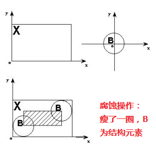
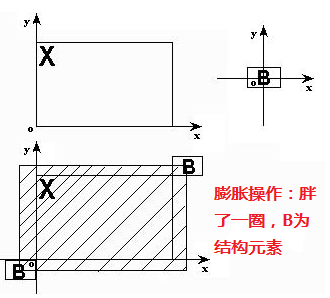

腐蚀操作
其中，g(x,y)为腐蚀后的灰度图像，f(x,y)为原灰度图像，B为结构元素。腐蚀运算是由结构元素确定的邻域块中选取图像值与结构元素值的差的最小值。
膨胀操作
其中，g(x,y)为腐蚀后的灰度图像，f(x,y)为原灰度图像，B为结构元素。 膨胀运算是由结构元素确定的邻域块中选取图像值与结构元素值的和的最大值。
腐蚀和膨胀是图像的形态学处理中最基本的操作，之后遇见的开操作和闭操作都是腐蚀和膨胀操作的结合运算。腐蚀和膨胀的应用非常广泛，而且效果还很好：
_结构元素_是形态学操作中最重要的概念，
 
如上图，B为结构元素。
腐蚀操作描述为：扫描图像的每一个像素，用结构元素与其覆盖的二值图像做“与”操作：如果都为1，结果图像的该像素为1，否则为0。
膨胀操作描述为：扫描图像的每一个像素，用结构元素与其覆盖的二值图像做“与”操作：如果都为0，结果图像的该像素为0，否则为1。
以上都是关于二值图像的形态学操作，对于灰度图像：
腐蚀操作
其中，g(x,y)为腐蚀后的灰度图像，f(x,y)为原灰度图像，B为结构元素。腐蚀运算是由结构元素确定的邻域块中选取图像值与结构元素值的差的最小值。
膨胀操作
其中，g(x,y)为腐蚀后的灰度图像，f(x,y)为原灰度图像，B为结构元素。 膨胀运算是由结构元素确定的邻域块中选取图像值与结构元素值的和的最大值。
在灰度图的形态学操作中，一般选择“平摊”的结构元素，即结构元素B的值为0，则上面对灰度图的形态学操作可简化如下：
好了，这就是基本的形态学操作——腐蚀和膨胀，下面是使用OpenCV对图像进行腐蚀和膨胀的程序，还是秉承我们一贯的原则：搁下理论，先直观地感觉图像处理算法的效果，实际项目需要时再深入挖掘！
/*
* FileName : eroding_and_dilating.cpp
* Author : xiahouzuoxin @163.com
* Version : v1.0
* Date : Fri 19 Sep 2014 07:42:12 PM CST
* Brief :
*
* Copyright (C) MICL,USTB
*/
#include "cv.h"
#include "highgui.h"
#include "opencv2/imgproc/imgproc.hpp"
using namespace std;
using namespace cv;
#define TYPE_MORPH_RECT (0)
#define TYPE_MORPH_CROSS (1)
#define TYPE_MORPH_ELLIPSE (2)
#define MAX_ELE_TYPE (2)
#define MAX_ELE_SIZE (20)
Mat src, erode_dst, dilate_dst;
const char *erode_wn = "eroding demo";
const char *dilate_wn = "dilating demo";
int erode_ele_type;
int dilate_ele_type;
int erode_ele_size;
int dilate_ele_size;
static void Erosion(int, void *);
static void Dilation(int, void *);
/*
* @brief
* @inputs
* @outputs
* @retval
*/
int main(int argc, char *argv[])
{
if (argc < 2) {
cout<<"Usage: ./eroding_and_dilating [file name]"<<endl;
return -1;
}
src = imread(argv[1]);
if (!src.data) {
cout<<"Read image failure."<<endl;
return -1;
}
// Windows
namedWindow(erode_wn, WINDOW_AUTOSIZE);
namedWindow(dilate_wn, WINDOW_AUTOSIZE);
// Track Bar for Erosion
createTrackbar("Element Type\n0:Rect\n1:Cross\n2:Ellipse", erode_wn,
&erode_ele_type, MAX_ELE_TYPE, Erosion); // callback @Erosion
createTrackbar("Element Size: 2n+1", erode_wn,
&erode_ele_size, MAX_ELE_SIZE, Erosion);
// Track Bar for Dilation
createTrackbar("Element Type\n0:Rect\n1:Cross\n2:Ellipse", dilate_wn,
&dilate_ele_type, MAX_ELE_TYPE, Dilation); // callback @Erosion
createTrackbar("Element Size: 2n+1", dilate_wn,
&dilate_ele_size, MAX_ELE_SIZE, Dilation);
// Default start
Erosion(0, 0);
Dilation(0, 0);
waitKey(0);
return 0;
}
/*
* @brief 腐蚀操作的回调函数
* @inputs
* @outputs
* @retval
*/
static void Erosion(int, void *)
{
int erode_type;
switch (erode_ele_type) {
case TYPE_MORPH_RECT:
erode_type = MORPH_RECT;
break;
case TYPE_MORPH_CROSS:
erode_type = MORPH_CROSS;
break;
case TYPE_MORPH_ELLIPSE:
erode_type = MORPH_ELLIPSE;
break;
default:
erode_type = MORPH_RECT;
break;
}
Mat ele = getStructuringElement(erode_type, Size(2*erode_ele_size+1, 2*erode_ele_size+1),
Point(erode_ele_size, erode_ele_size));
erode(src, erode_dst, ele);
imshow(erode_wn, erode_dst);
}
/*
* @brief 膨胀操作的回调函数
* @inputs
* @outputs
* @retval
*/
static void Dilation(int, void *)
{
int dilate_type;
switch (dilate_ele_type) {
case TYPE_MORPH_RECT:
dilate_type = MORPH_RECT;
break;
case TYPE_MORPH_CROSS:
dilate_type = MORPH_CROSS;
break;
case TYPE_MORPH_ELLIPSE:
dilate_type = MORPH_ELLIPSE;
break;
default:
dilate_type = MORPH_RECT;
break;
}
Mat ele = getStructuringElement(dilate_type, Size(2*dilate_ele_size+1, 2*dilate_ele_size+1),
Point(dilate_ele_size, dilate_ele_size));
dilate(src, dilate_dst, ele);
imshow(dilate_wn, dilate_dst);
}膨胀和腐蚀操作的函数分别是erode和dilate，传递给他们的参数也都依次是原图像、形态学操作后的图像、结构元素ele。本程序中给出了3种结构元素类型，分别是
#define TYPE_MORPH_RECT (0) // 矩形
#define TYPE_MORPH_CROSS (1) // 十字交叉型
#define TYPE_MORPH_ELLIPSE (2) // 椭圆型再通过OpenCV提供的getStructuringElement函数创建Mat类型的结构元素。
getStructuringElement的参数依次是结构元素类型（OpenCV中提供了宏定义MORPH_RECT、MORPH_CROSS和MORPH_ELLIPSE表示）、结构元素大小。
这里我们首次接触了createTrackbar函数（声明在highgui.hpp中），该函数的功能是给窗口添加滑动条。其原型是：
CV_EXPORTS int createTrackbar( const string& trackbarname, const string& winname,
int* value, int count,
TrackbarCallback onChange=0,
void* userdata=0);trackbarname为滑动条的名称，将会显示在滑动条的前面，参见结果中的图片显示； winname为窗口名； value为滑动条关联的变量，如上面程序中第一个滑动条关联到erode_ele_type，表示——当滑动条滑动变化时，erode_ele_type的值发生响应的变化； count表示滑动条能滑动到的最大值； TrackbarCallback onChange其实是这个函数的关键，是滑动条变化时调用的回调函数。当滑动条滑动时，value值发生变化，系统立刻调用onChange函数，执行相关的操作，回调函数的定义形式是固定的：
void onChange(int, void *)程序中的回调函数Erosion和Dilation函数的定义都遵循该形式：
static void Erosion(int, void *);
static void Dilation(int, void *);对“黑白小猪”进行膨胀操作的变化（随着结构元素大小的变化）如下图：
dilating_demo
对“黑白小猪”进行腐蚀操作的变化（随着结构元素大小的变化）如下图：
eroding_demo
膨胀与腐蚀在图像处理中具有广泛的用途，比如提取车牌过程中，可以通过膨胀运算确定车牌的区域。如下图为通过sobel算子提取边缘后的车牌，
car_plate
为去掉边界，确定车牌在图中的位置，可以通过膨胀操作，结果如下：
car_plate_dilate
上图中的红线区域就是膨胀后能用于确定车牌的连通区域，再通过对连通区域的搜索及“车牌的矩形特性”即可确定含有车牌数字在图片中的位置。